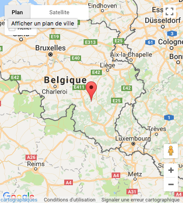

Historique
On brasse à l'abbaye depuis 1595 mais à l'époque, la priorité était donnée à l'activité agricole. À la Révolution française, les moines fuient l'abbaye qui est pillée et toute activité brassicole est arrêtée. La congrégation se reforme à la fin du xixe siècle et c'est en 1950 que les moines brassent à nouveau à Rochefort. C'est la production commencée à cette date qui est le point de départ de la marque qui existe jusqu'aujourd'hui.
Types de bières et leurs caractéristiques
Il existe trois types de bières Trappistes de Rochefort. Toutes trois sont des bières brunes de fermentation haute. Ces bières sont commercialisées en bouteilles de 33 cl.
- la Trappiste Rochefort 6, la plus ancienne, à capsule rouge titre 7,5 % d'alcool.
- la Trappiste Rochefort 8 dite Spéciale à capsule verte titre 9,2 % d'alcool.
- la Trappiste Rochefort 10 dite Merveille à capsule bleue titre 11,3 % d'alcool. C'est la bière trappiste comprenant le plus grand pourcentage d'alcool. Elle a été créée après la Seconde Guerre mondiale.
Fabrication
À Rochefort, la quantité de bière fabriquée est volontairement limitée. Cela représente néanmoins une production de 300 hectolitres de bières par semaine. La levure utilisée est unique et propre à la brasserie qui possède sa propre souche. L'eau naturellement pure est puisée dans la source de la Tridaine, proche de l'abbaye. Un projet d'extension de la carrière de calcaire voisine de la Boverie, exploitée par une société du groupe Lhoist, fait débat à propos du maintien de la qualité de cette eau de source. Cette extension est actuellement bloquée
Localisation
|  |
|